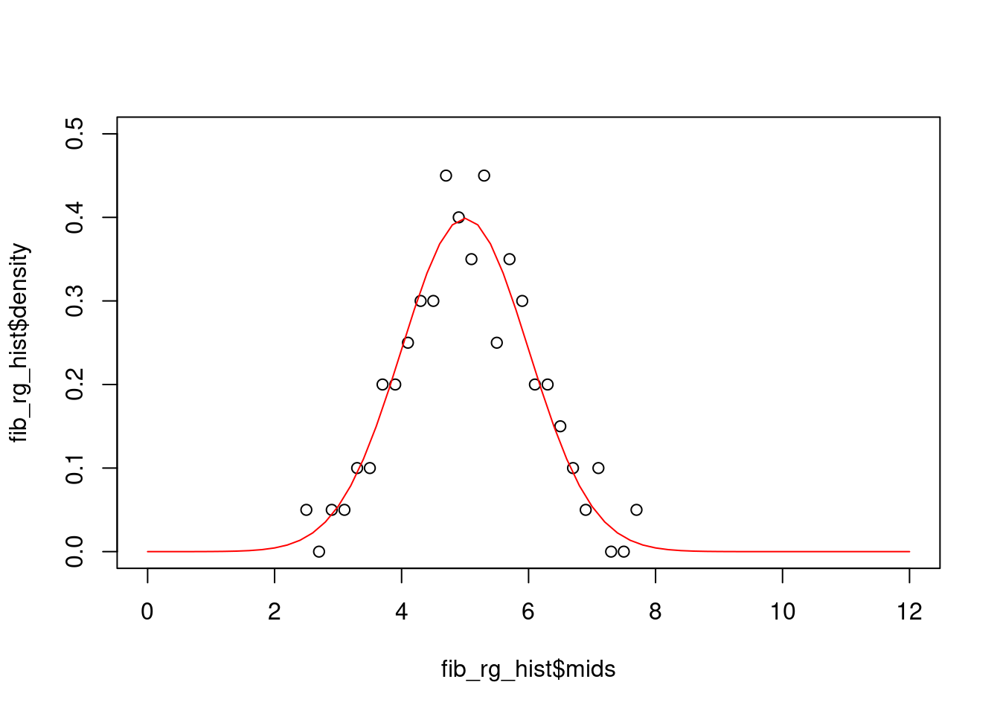
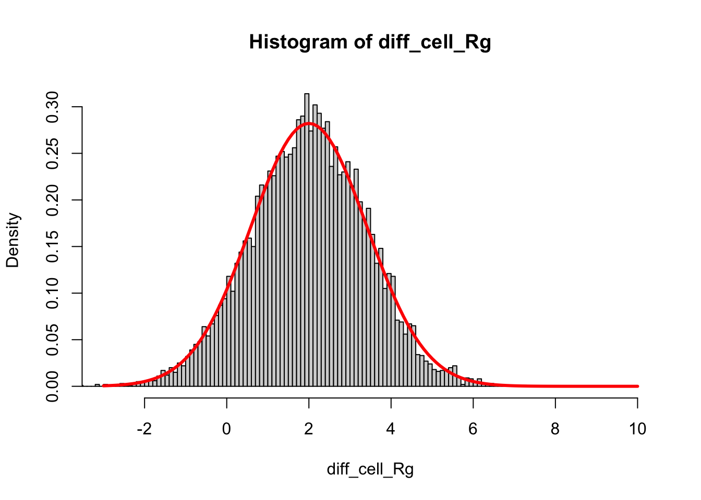

We generated observed and theoretical distributions of Rg. First muscle:
# Get muscle Rg as a vector:muscle_rg <- data[data$Cell_Type =="Muscle", ]$Cell_Rg# generate histogrammuscle_rg_hist <-hist(muscle_rg, breaks =30, plot = F)# Use seq to create a range of numberscell_size_list <-seq(0, 12, 0.2)# Use dnorm to calculate probability at each point of the vector abovedist_cell_size_muscle <-dnorm(cell_size_list, mean =7, sd =1)plot(muscle_rg_hist$mids, muscle_rg_hist$density, xlim =c(0, 12), ylim =c(0, 0.5))lines(cell_size_list, dist_cell_size_muscle, col ="red", xlim =c(0, 12), ylim =c(0, 0.5))
Next, fibroblasts:
# Get Fib Rg as a vector:fib_rg <- data[data$Cell_Type =="Fibroblasts", ]$Cell_Rg# generate histogramfib_rg_hist <-hist(fib_rg, breaks =30, plot = F)# Use dnorm to calculate probability at each point of the cell_size_list vectordist_cell_size_fib <-dnorm(cell_size_list, mean =5, sd =1)plot(fib_rg_hist$mids, fib_rg_hist$density, xlim =c(0, 12), ylim =c(0, 0.5))lines(cell_size_list, dist_cell_size_fib, col ="red", xlim =c(0, 12), ylim =c(0, 0.5))

We are confident that Rg is sampled from Normal distributions, so we can take advantage of knowing exact details of the theoretical distributions. We could work out the math using formulae, or we could sample the distribution to get an intuitive feel.
The question we are asking is: Is the Rg of muscle different from Rg of fibroblasts?
We now know that the Rg is sampled from normal distribution as follows:
Muscle - mean = 7, sd = 1
Fibroblasts - mean = 5, sd = 1
The advantage of having a theoretical distribution is that we can calculate exact differences. We will use 10,000 points sampled from each distribution to illustrate this. Let us generate 10,000 points from these distributions:
theoretical_fib <-rnorm(10000, mean =5, sd =1)theoretical_muscle <-rnorm(10000, mean =7, sd =1)
The difference in Rg between the two cell types would be simply:
The mean of this distribution is simply difference in mean of the starting distributions: 7-5 = 2. The sd is the square root of sum of squares of the sd of the starting distributions:
sqrt(1^2+1^2)
[1] 1.414214
Let us see if this is the case, by overlaying the theoretical normal distribution over the histogram of differences:
hist(diff_cell_Rg, breaks =100, freq = F, xlim =c(-3, 10))lines(x =seq(-3, 10, 0.1), y =dnorm(seq(-3, 10, 0.1), m =2, sd =1.414), lwd =3, col ="red", xlim =c(-3, 10))

The probability that muscle has larger Rg than fibroblasts is the probability that the difference is > 0.
We can use the theoritical distribution to figure this out:
pnorm(0, mean =2, sd =1.414, lower.tail = F)
[1] 0.9213817
So 92% of muscle cells will have bigger Rg than fibroblasts.
Now, here again are the theeoretical distributions of the two cell types:
plot(cell_size_list, dist_cell_size_muscle, col ="red", xlim =c(0, 12), ylim =c(0, 0.5), type ="l")lines(cell_size_list, dist_cell_size_fib, col ="blue", xlim =c(0, 12), ylim =c(0, 0.5))abline(v =7, col ="red")abline(v =5, col ="blue")
To ask if muscle has significantly higher Rg, you could ask, what is the probability of seeing an Rg in fibroblasts that this higher than mean Rg of muscle:
pnorm(7, mean =5, sd =1, lower.tail = F)
[1] 0.02275013
2.2% of fibroblasts have Rg greater than or equal to the mean Rg of muscle.
(Is this the p-value?)
Below we will go through two methods to determine the statistical significance, or p-value of this comparison.
Bootstrapping
To get statistical significance, we ask: “what is the probability of the observed measure occuring in a null distribution?”
We could either use a theoretical null distribution or create our own using existing data.
What if we didn’t know the underlying distribution of the data or we didn’t care? Biological systems are complex and many times, the standard theoretical distributions will not capture the observed distribution.
With increasing number of data points and increasing computing power, we don’t need to rely on theoretical distributions.
We can create our own multiverse (a.k.a the null distribution) with resampling/bootstrapping.
Here are the steps involved in bootstrapping:
We will aggregate our observations into a new vector. This is the starting point of creating our multiverse.
all_obs <-c(muscle_rg, fib_rg)
When we sample 100 observations from “all_obs” randomly, we create a new Rg dataset sampled from the combined data:
We then calculate the difference in mean of the two sampled datasets. Here, we just performed an experiment where we sampled two sets of Rg from a single distribution and calculated the differences in mean between the two sets.
We repeat this many times (here let us do 1000 repetitions) to get the null distribution of the differences in mean. The null distribution assumes that the Rg for muscle and fibroblasts were drawn from the same distribution:
# initialize a vector with 0sbs_mean_diff <-rep(0, 1000)for (i in1:1000) { tmp_muscle_rg <-sample(all_obs, 100, replace = T) tmp_fib_rg <-sample(all_obs, 100, replace = T) bs_mean_diff[i] <-mean(tmp_muscle_rg) -mean(tmp_fib_rg)# if you want to sample without replacement:# idx_b <- sample(1:200,100)# idx_a <- setdiff(1:200,idx_b)# bs_mean_diff[i] = mean(all_obs[idx_a]) - mean(all_obs[idx_b])}
Let us see the distribution of the mean difference of random sampling of Rg with the observed difference in red:
Never! So the difference in mean Rg we observe between muscle and fibroblasts is highly statistically significant. In other words, p=0
Bootstrapping requires no assumptions and can be applied to any dataset succesfully to determine if the same measure from two samples are significantly different.
Let us do the same compaarison between fibroblasts and neurons:
Here, the probability of the difference in mean observed in the null distribution is 0.0824, higher than accepted level of significance (0.05).
Non-parametric tests
Another way to ask if the two samples are drawn from different distributions is to use non parametric statistical tests that have inbuilt null distributions. The two that will be useful in a wide range of scenarios are Kolmogrov Smirnov test and Wilcoxon test, both of which are easy to implement in R.
The “p.value” variable gives the probability that the two samples were drawn from the same underlying distribution. Hence, if p.value is less than 0.05 (or a more stringent cutoff), it means the two samples are significantly different.
KS test:
ks.test(muscle_rg, fib_rg)
Asymptotic two-sample Kolmogorov-Smirnov test
data: muscle_rg and fib_rg
D = 0.7, p-value < 2.2e-16
alternative hypothesis: two-sided
ks.test(neuron_rg, fib_rg)
Asymptotic two-sample Kolmogorov-Smirnov test
data: neuron_rg and fib_rg
D = 0.1, p-value = 0.6994
alternative hypothesis: two-sided
Wilcoxon test:
wilcox.test(muscle_rg, fib_rg)
Wilcoxon rank sum test with continuity correction
data: muscle_rg and fib_rg
W = 9227, p-value < 2.2e-16
alternative hypothesis: true location shift is not equal to 0
wilcox.test(neuron_rg, fib_rg)
Wilcoxon rank sum test with continuity correction
data: neuron_rg and fib_rg
W = 4444, p-value = 0.1747
alternative hypothesis: true location shift is not equal to 0
Overlaps
We come across the question of overlaps quite a bit in biological datasets.
A typical question would be: “Does my list of upregulated genes overlap with [my favorite] category of genes?”
(Or the dreaded Reviewer comment “You should do a GO analysis” which means you have to add a supplementary figure no one cares about.)
Let us take an experiment where you measured change in gene expression and categorized each gene as either “Upregulaated” or “Not_Upregulated”.
You hypothesize that your intervention affects cell cycle genes, so you get a list of cell cycle genes from a database and categorize each gene in your gene list as either cell cycle gene or not.
If the two categories have nothing to do with each other, then they co-occur just by chance. They would be “independent” of each other and we can calculate the joint probability for such a scenario as follows:
We will use the Fisher exact test* to get the significance of this observation, or what is the probability of observing this overlap from two randomly distributed variables.
*(chi squared test and hypergeometric test can also be used)
You can see that off diagonal seems enriched already.
fisher.test(c_table)
Fisher's Exact Test for Count Data
data: c_table
p-value = 5.137e-07
alternative hypothesis: true odds ratio is not equal to 1
95 percent confidence interval:
0.007467239 0.172362221
sample estimates:
odds ratio
0.04022862
The overlap is highly significant.
Using bootstrap
We can estimate significance alternatively using bootstrapping:
# make a copy of the overlap_dat dataframe so we can shuffle# the cell_cycle column each repetition of the bootstrap.temp_overlap_df <- overlap_dat# initialize vector that will contain number of genes that# have both a cell cycle category and are upregulatedoverlap_ct <-rep(0, 1000)for (i in1:1000) {# shuffle Cell_Cycle_Gene column temp_overlap_df$Cell_Cycle_Gene <-sample(overlap_dat$Cell_Cycle_Gene, nrow(overlap_dat))# count overlap overlap_ct[i] <-nrow(temp_overlap_df[temp_overlap_df$Cell_Cycle_Gene =="Cell_Cycle"& temp_overlap_df$Exp_Change =="Upregulated", ])}
We have generated a distribution of number of genes that would have overlapping cell cycle category and upregulation category by chance. Now let us compare the distribution with what we observe: